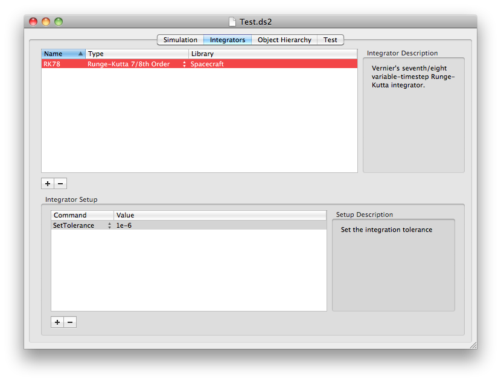

Add integrators to your simulation on this tab. You must add at least one integrator. Click on the + to create a new entry, and then select the integrator from those available in the Type column. A 4th order Runge-Kutta method is available built-in. See the dsim_integrator Class Reference in the API to learn how to add more integrators.
Integrators may have additional setup parameters, such as tolerances. The 7/8th integrator in PSS' Spacecraft Package provides a SetTolerance parameter. Click the + to add an entry and then adjust it. Click on the - to remove the selected parameter.

Copyright 2011  , all rights reserved.
, all rights reserved.
Return to DSim Manager Help Home